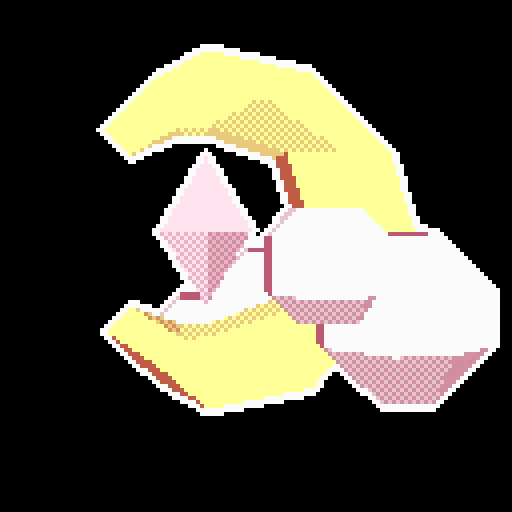
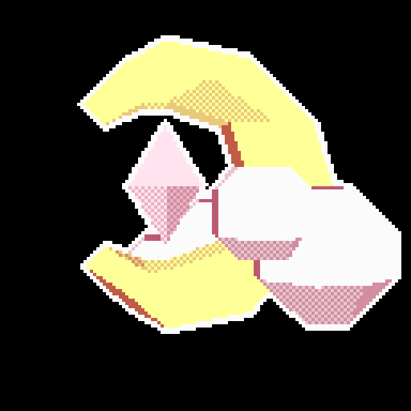

Bienvenido a la documentación oficial del bot Lopple. Aquí podrás encontrar información detallada sobre su funcionamiento y comandos disponibles.
Bienvenido a la documentación oficial del bot Lopple. Aquí podrás encontrar información detallada sobre su funcionamiento y comandos disponibles.
Lopple es un bot de Discord diseñado para gestionar equipos y sorteos. Su objetivo principal es ofrecer una experiencia automatizada, flexible y visualmente atractiva. Incluye comandos de gestión, utilidades de sorteo y soporte visual mediante embeds y reacciones.
Aquí se mostrarán ejemplos visuales del funcionamiento del bot, cómo configurar un equipo, usar comandos y aprovechar al máximo sus funcionalidades.

 
